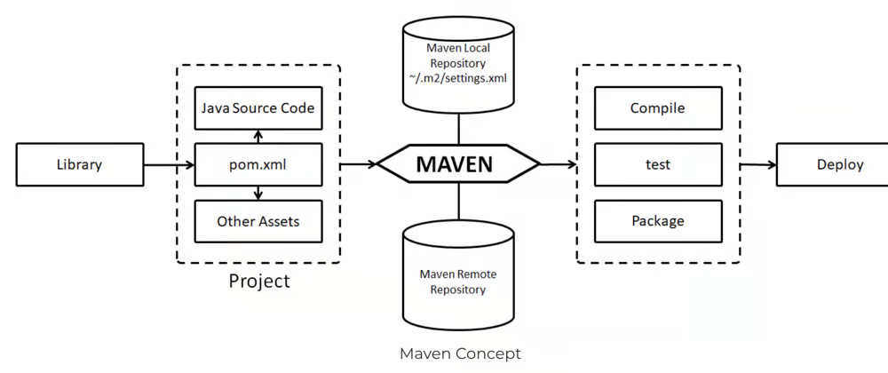
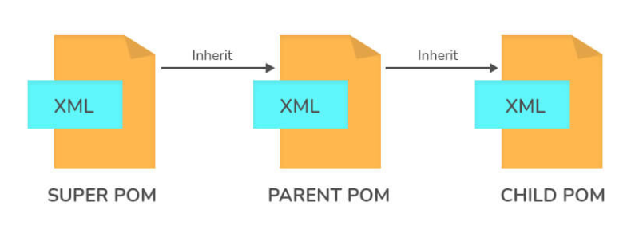
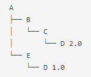
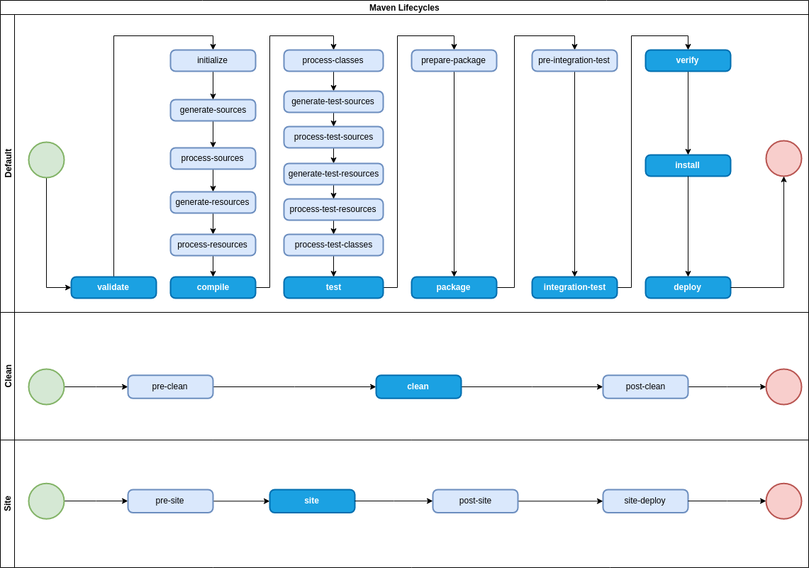

Maven
Introduction
- A popular open-source build tool developed by the Apache Group to build, publish, and deploy several projects.
- A robust project management tool based on the POM architecture.
- It simplifies the day-to-day work of Java developers and aids in the comprehension of any Java-based project.
- It takes care of Builds, Dependencies, Reports, Distribution, Releases, Mailing list, Documentation, SCMs.
- Can also be used to create and manage projects written in other languages such as C#, Ruby, Scala.
- Use variations of Maven (e.g. Polyglot Maven), or Maven Plugins to use other languages than JAVA.
Objectives
- Making the build process easy
- Providing a uniform build system
- Providing quality project information
- Encouraging better development practices
- While using Maven doesn't eliminate the need to know about the underlying mechanisms, Maven does shield developers from many details.
- Maven builds a project using its project object model (POM) and a set of plugins. Once you familiarize yourself with one Maven project, you know how all Maven projects build. This saves time when navigating many projects.
- Maven provides useful project information that is in part taken from your POM and in part generated from your project's sources. For example, Maven can provide:
- Change log created directly from source control
- Cross referenced sources
- Mailing lists managed by the project
- Dependencies used by the project
- Unit test reports including coverage
- Third party code analysis products also provide Maven plugins that add their reports to the standard information given by Maven.
Installation
Configuration
- Environment Variables
MAVEN OPTScontains parameters used to start up the JVM running Maven and can be used to supply additional options to it.MAVEN ARGScontains arguments passed to Maven before CLI arguments.
settings.xml, located inUSER HOME/.m2the settings files is designed to contain any configuration for Maven usage across projects..mvn, files in this directory contain project specific configuration for running Maven.maven.configis used to specify command-line options for Maven at the project level. This allows to configure global options that should apply whenever Maven commands are run within the project.jvm.configlets define JVM configuration, i.e. define the options for the build on a per project base.extensions.xmlis used to configure Maven core extensions. These extensions are automatically included when anyone builds the project.
.mvn/extensions.xml file
Previously, it was very painful to change maven installation, or extend it. This file helps to do this easily.
.mvn/maven.config file
It was really hard to define a general set of options for calling the maven command line. This file makes it easier on a per-project basis.
.mvn/jvm.config file
For example if we put the following JVM options into the .mvn/jvm.config file
MAVEN_OPTS or switch between different configurations.
Architecture
- Maven’s architecture revolves around the concept of Project Object Model (POM), which serves as the blueprint for managing the build process.
- This works in three steps:
- Read the
pom.xmlfile. - Download the dependencies defined in
pom.xmlinto the local repository from the central repository. - Create and generate a report according to the requirements, and executes life-cycles, phases, goals, plugins, etc.
- Read the

Maven ArchitectureProject Object Model (POM)
- Refers to the XML files with all the information regarding project and configuration details.
- Central piece of Maven’s architecture. It defines the project’s structure, dependencies, build configuration, and other project-related information.
- Included in the POM: Dependencies, Developers and contributors, Plugins, Plugin configuration, Resources.
- The XML file is in the project home directory. When we tend to execute a task, Maven searches for the POM in the current directory.
Minimum required elements for POM
project- The root element of thepom.xmlfile.modelVersion– identifies which version of the POM model you’re working with. For Maven 2 and Maven 3, use version 4.0.0.groupId– Project group’s identifier. It is unique, and you will most likely use a group ID that is similar to the project’s root Java package name.artifactId– Used for naming the project you’re working on.version– The version number of the project is contained in the version element. If your project has been released in multiple versions, it is helpful to list the versions.
Maven coordinates
- Uniquely identify a project, a dependency, or a plugin defined in POM.
- Each entity is uniquely identified by the combination of a group identifier (
groupIdelement), an artifact identifier (artifactIdelement), and the version (versionelement). - The
groupIdand theversionelements can also be inherited from the parent POM file.
Pre-defined properties
- Can be used to simplify and manage build configuration more effectively.
- These properties are automatically available in the pom.xml and can be referenced using the $propertyName syntax.
Project Properties
- Provide information about the current project.
$project.groupId: The group ID of the project.$project.artifactId: The artifact ID of the project.$project.version: The version of the project.$project.packaging: The packaging type of the project (e.g., jar, war).
Build Properties
- Provide information about the build configuration.
$project.build.directory: The directory where the build output is generated.$project.build.outputDirectory: The directory where compiled classes are placed.$project.build.finalName: The final name of the built artifact without the extension.
User Properties
- Refer to settings specific to the user running Maven, typically defined in the settings.xml file.
- Example:
$user.home-> The user's home directory$user.name-> The user's login name
Environment Properties
- Allow access to environment variables defined in the operating system.
$env.VAR NAME, whereVAR NAMEis the name of the environment variable.
System Properties
- Are Java system properties that can be accessed during the build.
$java.version: The version of the Java runtime environment.$os.name: The name of the operating system.
Maven Properties
- Are specific to Maven itself.
$maven.version: The version of Maven being used.$maven.home: The installation directory of Maven.$maven.repo.local: The path to the local Maven repository.
User-defined properties
- These properties can be referenced in Maven just like any other property, i.e.
$arbitrary.property. - Can be created in the POM as follows:
Benefits of Using Properties
- Centralized Configuration: Properties allows to define values in a single location, and makes it easier to manage and update configuration values.
- Reusability: Properties can be reused across multiple places in the
pom.xml, reducing redundancy. - Maintainability: Centralizing values makes it easier to update them.
- Flexibility: Different values can be injected at build time using profiles, system properties, or environment variables.
- Customization: Allows for customization of builds for different environments (development, testing, production) using profiles.
Super POM
- A part of the Maven installation, and refers to the default POM of Maven.
- All Maven project POMs extend the Super POM, which defines a set of defaults shared by all projects.
- All of the configurations defined in the super POM file is inherited by even the simplest version of a POM file.
- Options of super POM can be altered by redefining that same section.
- To execute any particular objectives, effective POM is used.

POM HierarchyDependencies
- A dependency in Maven refers to an external library or module that a project needs in order to compile, build, and run.
- Used to include reusable code from third-party libraries, frameworks, or other projects, avoiding the need to write everything from scratch.
- They help in modularizing the code, improving code reuse, and managing library versions.
- Maven automates the process of downloading, linking, and updating dependencies, which ensures that the project always uses the correct versions of libraries.
System Dependency
- Refers to the dependency that is present with the scope system.
- These dependencies are commonly used to help Maven know the dependencies that are provided by the JDK or VM.
- Mostly used to resolve dependencies on artifacts that are provided by the JDK.
- Some common examples are the Java Authentication and Authorization Service (JAAS) or the JDBC standard extensions.
Transitive dependencies
- Indirect dependencies that a project inherits from its direct dependencies.
- When a project depends on a library, and that library depends on other libraries, Maven automatically includes those additional libraries in the project.
- Example: If your project depends on Library A, and Library A depends on Library B, Maven will include Library B automatically.
- Although transitive dependencies can implicitly include desired dependencies, it is a good practice to explicitly specify the dependencies your source code uses directly.
Dependency Mediation
- This determines what version of an artifact will be chosen when multiple versions are encountered as dependencies.
- Maven picks the ”nearest definition”, i.e., it uses the version of the closest dependency to the project in the tree of dependencies.
- It can always be guaranteed a version by declaring it explicitly in the project’s POM.
- If two dependency versions are at the same depth in the dependency tree, the first declaration wins.

Maven Dependency MediationDependency management
- Allows project authors to declare the versions of artifacts that are to be utilized when they are discovered in transitive dependencies or dependencies that have no version specified.
- Ensures consistent dependency versions across multiple modules in a project.
Specifying Dependencies in pom.xml using dependencies tag
Specifying Dependencies in pom.xml using dependencyManagement tag
Dependency Scope
- The scope of a dependency determines when the dependency is required and available during the build lifecycle.
- There are 6 scopes:
compile: Default scope, required for all phases of the project lifecycle.test: Used only during the testing phase.provided: Required for compilation but not packaged in the WAR/JAR. It’s provided by the runtime environment.runtime: Not needed for compilation but required for execution.system: Similar to provided, but you must explicitly provide the JAR file on your system.import: Only supported in the<dependencyManagement>section. It indicates the dependency is to be replaced with the effective list of dependencies in the specified POM’s<dependencyManagement>section. Since they are replaced, dependencies with a scope of import do not actually participate in limiting the transitivity of a dependency.
Optional Dependency
- Used when a library (or module) includes other libraries that are not necessarily required by every project using the library.
- They help avoid pulling in transitive dependencies that are not always needed, preventing unnecessary bloat and potential conflicts in dependent projects.
- Used when it’s not possible to split a project into sub-modules.
- They save storage and memory.
- They prevent troublesome jars from being packed into a WAR, JAR, or other formats, if they violate a license agreement or cause classpath difficulties.
- Include
<optional>true</optional>inside a package’s dependency declaration to make it optional.
Dependency Exclusions
- Since Maven resolves dependencies transitively, it is possible for unwanted dependencies to be included in a project’s classpath.
- Maven allows excluding such dependencies.
- Exclusions are set on a specific dependency in the POM, and are targeted at a specific
groupIdandartifactId. - When the project is built, that artifact will not be added to the project’s classpath.
Defining Dependency Exclusions in pom.xml
Why exclusions are made on a per-dependency basis, rather than at the POM level? This is mainly to be sure the dependency graph is predictable, and to keep inheritance effects from excluding a dependency that should not be excluded. If you get to the method of last resort and have to put in an exclusion, you should be absolutely certain which of your dependencies is bringing in that unwanted transitive dependency. If you truly want to ensure that a particular dependency appears nowhere in your classpath, regardless of path, the banned dependencies rule can be configured to fail the build if a problematic dependency is found. When the build fails, you'll need to add specific exclusions on each path the enforcer finds.
Repositories
- Refer to the directories of packaged JAR files that contain metadata.
- The metadata refers to the POM files relevant to each project.
- This metadata is what allows Maven to download dependencies.
- If the dependencies are not present in the local repository, then Maven downloads them from a central repository and stores them in the local repository. to download dependencies.
Local Repository
- Refers to the machine of the developer where all the project material is saved, and contains all the dependency jars.
- Maven saves all of the JARs, dependency files, and other things it downloads in the Maven local repository.
- All of the artifacts are kept locally in the Maven local repository, which is a folder on the local machine.
- To manually install the JAR into the local Maven repository:
install-file-Dfile = <file path>.
Remote Repositories
- Refers to the repository present on a server (e.g. Maven Central) that is used when Maven needs to download dependencies.
- Whenever anything is required from the remote repository, it is first downloaded to the local repository, and then it is used.
- Central Repository, also known as Maven Central, is the default remote repository that Maven queries to download dependencies.
Custom Repository
- Refers to user-defined repositories, either remote or internal, specified in the POM file or settings.
- Used to
- host proprietary or internal artifacts not suitable for public distribution.
- centralize dependencies and artifacts specific to an organization.
Repository Configuration
in pom.xml
in settings.xml
settings.xml can be customized for both Global Settings and User Settings.
Dependency Resolution Process
- Check Local Repository: Maven looks for the dependency in the local cache (
~/.m2/repository). - Check Custom Repositories: If not found locally, Maven checks the custom repositories listed in the
<repositories>section of thepom.xml. - Check Central Repository: If the dependency is still not found, Maven checks the central repository.
Repository Order
- Remote repository URLs are queried in the following order for artifacts until one returns a valid result:
- Effective settings:
- Global
settings.xml - User
settings.xml
- Global
- Local effective build POM:
- Local
pom.xml - Parent POMs, recursively
- Super POM
- Local
- Effective POMs from dependency path to the artifact.
- Effective settings:
Plugin
- Refers to collections of goals that can be executed during the build process.
- Are essential features of Maven that are used to reuse the common build logic across several projects.
- Used to:
- Create a JAR/WAR file.
- Compile code files.
- Unit testing of code.
- Create project documentation.
- Create project reports.
- There are two types of Maven Plugins:
- Build plugins are executed during the build and are configured in the
<build/>element ofpom.xml. - Reporting plugins are executed during the stage generation and are configured in the
<reporting/>element of thepom.xml.
- Build plugins are executed during the build and are configured in the
How Plugins Work?
- By defining goals, which are specific tasks that the plugin can perform.
- When a Maven build is run, user specifies which goals to be execute.
- For example, running mvn clean compile will execute the clean goal from the
maven-clean-pluginand the compile goal from themaven-compiler-plugin.
Configuring Plugins in pom.xml
Lifecycle Integration
- If the plugin is included in the
pom.xml, it will be executed automatically during the build phases. - For example, the compile goal of the
maven-compiler-pluginis bound to the compile phase of the default lifecycle.
Commonly Used Plugins
- Clean plugin cleans the project by removing files generated at build time.
- Install plugin installs the project’s artifact into the local repository.
- Deploy plugin deploys the artifact to a remote repository.
- Surefire Plugin runs an application’s unit tests during the test phase of the build lifecycle. It can generate reports in one of two file formats: plain text files or XML files.
Custom Plugins
- If users’ build process involves tasks that are not covered by existing plugins, a custom plugin can fill that gap.
- Helps to automate repetitive tasks specific to your development process.
- To create a custom Maven plugin
- Create a new Maven project with the appropriate structure.
- Create a Java class that extends AbstractMojo from the Maven Plugin API, and implement the logic for the plugin within this class.
- Use the
plugin.xmlfile to define the plugin’s metadata and goals. - Build the custom plugin with mvn package.
MOJO
- Can be defined as a Maven plain Old Java Object.
- Every MOJO is an executable goal in Maven, and a plugin refers to the distribution of such MOJOs.
- Enables Maven to extend the functionality that is already not found in it.
- Can be executed at different phases of the Maven build lifecycle, such as compile, test, package, install, and deploy.
Build Lifecycle
- A sequence of phases that define the order in which goals are executed during the build process.
- Built-in build lifecycles
- Default Lifecycle: Handles the project deployment, covering tasks such as compilation, testing, packaging, and deployment.
- Clean Lifecycle: Handles project cleaning, which involves removing files generated by the previous build.
- Site Lifecycle: Handles the creation of project documentation and reports.
- Each lifecycle is made up of a series of phases, and each phase can be associated with one or more plugin goals.

Maven Build Life CycleBinding Goals to Phases
- Goals are bound to phases either by default or by explicit configuration in the
pom.xml. - For example: The
maven-compiler-plugin:compilegoal is bound to the compile phase by default.
Explicitly bind goals to phases
Build Profiles
- Refer to the set of configuration values required to build a project using different configurations.
- Different build profiles are added to the POM files while enabling different builds.
- A build profile helps in customizing build for different environments.
- There are three different types of build profiles:
- Per Project - defined in pom.xml
- Per User - defined in Maven user settings.xml
- Global - defined in Maven global settings.xml
Defining a Profile
Activation of Profiles
- Explicitly using command console input, using the
-Pflag in the command line. - Based on Environment Variables, using the activation element in the
pom.xml. - Through Maven settings.
- Based on environment variables.
- OS Settings.
- Present/missing files.
Artifact
- Refers to a deployable component of a software project, such as a JAR file, a WAR file, or a ZIP file, along with its associated metadata.
- Maven uses artifacts to manage dependencies, which are external libraries or modules that a project requires to compile, build, and run.
- Every artifact has its
groupID, anartifactID, and aversionstring. These three together identify the artifact. - Maven manages artifacts through its build lifecycle.
- Dependencies between artifacts are managed via the
pom.xmlfile, which specifies required artifacts along with their versions and scopes. - The desired packaging type is specified using the
<packaging>element.
Archtype
- Project templates or patterns used to generate new Maven projects. It defines a skeleton structure for a project, including directories, files, and initial configuration.
- They provide a convenient way to bootstrap projects with pre-defined structures, dependencies, and configurations, reducing the effort required to set up new projects and ensuring consistency across projects within an organization.
- Ensures that projects follow a consistent structure and configuration, making it easier for developers to navigate and understand new projects.
- Saves time by providing a starting point that includes commonly used configurations and dependencies.
- Use the Maven archetype:generate from the command line to create a new Maven project using an archetype.
- Types of Archetypes:
- Standard Archetypes: These are generic archetypes provided by Maven or the community for common project types (e.g., Java application, web application, library).
- Custom Archetypes: Organizations or individuals can create their own archetypes tailored to specific needs or conventions. This allows teams to standardize project setups across different developers and projects.
Sample POM
Alternatives
ANT
- An older build automation tool primarily focused on build automation and project dependency management.
- Uses XML-based build scripts (
build.xml) that define tasks and dependencies explicitly. - Describe each task and its dependencies in a linear, sequential manner.
- Widely used in legacy systems and environments where XML-based configuration is preferred.
Sample build.xml file for an Ant-based Java project
Difference with Maven
- Maven’s convention over configuration approach makes it easier to set up and maintain projects compared to Ant’s explicit task-based approach, which requires more manual configuration.
- Maven’s integrated dependency management simplifies dependency resolution and versioning compared to Ant, where managing dependencies typically requires more manual effort or additional plugins.
- Maven promotes standardized project structures and build lifecycles, which can lead to better consistency and easier project maintenance over time compared to Ant’s more flexible but potentially less structured approach.
- Maven benefits from a large community and extensive plugin ecosystem, providing solutions for a wide range of development and build tasks compared to Ant, which may require more custom scripting or integration with external tools.
Gradle
- A modern build automation tool that combines the flexibility of Ant with the dependency management and convention-over-configuration approach of Maven.
- Uses Groovy-based DSL (Domain Specific Language) or Kotlin for scripting.
- Uses a declarative approach where build scripts describe what needs to be done rather than how.
- Supports incremental builds and parallel execution of tasks, improving build performance.
Sample build.gradle file for an Graddle-based Java project
Difference with Maven
- Maven resolves dependencies from remote repositories like Maven Central. Graddle can resolve dependencies from various repositories, including Maven Central.
- Developers can configure plugins to execute tasks during predefined phases of Maven. Gradle also defines a build lifecycle but provides more flexibility. Its incremental build feature can improve build performance by executing only tasks that have changed or their dependencies.
- Gradle’s build scripts are typically faster to execute compared to Maven’s XML-based configuration.
When to Choose Maven?
- Maven promotes convention over configuration, making it suitable for projects that benefit from a standardized project structure. This can streamline project setup and maintenance.
- Maven has robust dependency management capabilities, allowing easy declaration and resolution of dependencies from remote repositories like Maven Central. If your project heavily relies on managed dependencies and requires seamless integration with external libraries, Maven is a good choice.
- Maven has been widely adopted in the Java ecosystem for many years. It offers stability, extensive documentation, and a large community of users and plugins.
- Maven integrates well with Continuous Integration (CI) and Continuous Delivery (CD) pipelines, such as Jenkins, GitLab CI, and others. Many CI/CD tools have built-in support for Maven, making it easier to automate builds, tests, and deployments.
- Maven is particularly well-suited for Java projects or projects that primarily use JVM-based languages (like Kotlin or Scala). It provides built-in support for compiling Java code, running tests, packaging artifacts, and managing project dependencies.